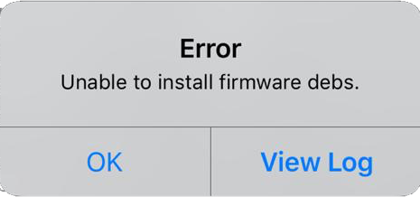
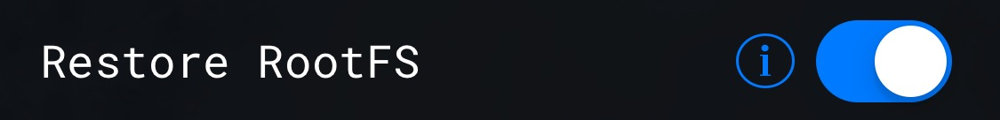

Unc0ver Fix
تأكد انك مطبق الخطوات بترتيب

Unable to install firmware debs
الخطأ ذا يصير لاحولت بين جلبريك لأخر
ويكون مخلفات الجلبريك السابق موجودة
الحل انك تحذف الجلبريك السابق بشكل الصحيح
اولآ:قم بأزالة الجلبريك كاملآ
أعادة تشغيل الجهاز
Unc0ver ادخل على
ثمن الإعدادات
ReStore RootFS وفعل
ارجع للصفحة الرئيسية
ReStore RootFS وضغط
الأن لاتطلع من التطبيق او تطفي الجوال
OK انتظر لين تجيك رسالة وضغط
OK انتظر لين تجيك رسالة ثانية وضغط
بعد الرسالة الثاني راح يعمل الجهاز اعادة تشغيل
إذا عمل اعادة تشغيل دون ظهور رسالة
قم بأعادة الخطوات من جديد
بعد اعادة التشغيل
ثمن فعل الجلبريك Unc0ver ادخل
ثانيآ:قم بحذف الجلبريك من الجلبريك السابق
ReStore RootFS عليك استخدام ميزة
بالجلبريك الذي استخدمته سابقآ
وفعل الجلبريك Unc0verورجع لـ
:)
<إن شاء الله ان مشكلتك انحلت 3